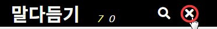

들어가기 ⇧
'말다듬기' 그림을 누릅니다.바로가기 만들기 ⇧
1. 크롬 주소 창에 maljib.org?1을 넣고, Enter 글쇠를 누르고, 오른쪽 끝을 누릅니다. 2. 메뉴에서 '도구 더보기' - '바로가기 만들기...' - [만들기]를 차례로 누릅니다.
2. 메뉴에서 '도구 더보기' - '바로가기 만들기...' - [만들기]를 차례로 누릅니다.(손전화에서는 '홈 화면에 추가' - '추가' - '추가'를 차례로 누릅니다.)
도움말 보기 ⇧
물음표를 누릅니다.
넣기 ⇧
1. 다듬을 말을 넣고 Enter 글쇠를 누릅니다. 2. 다듬은말을 넣고 '갈무리' 그림을 누릅니다.
더 넣기 ⇧
1. '더 넣기' 그림을 누릅니다. 2. 다듬은말을 더 넣고 '갈무리' 그림을 누릅니다.
2. 다듬은말을 더 넣고 '갈무리' 그림을 누릅니다.

적바림 쓰기 ⇧
1. '적바림 쓰기' 그림을 누릅니다. 2. 적바림을 써넣고 '갈무리' 그림을 누릅니다.
2. 적바림을 써넣고 '갈무리' 그림을 누릅니다.
 12◯ ㄱ◯ 가◯ {한복}을 --> ⑫ ㉠ ㉮ 한복을
12◯ ㄱ◯ 가◯ {한복}을 --> ⑫ ㉠ ㉮ 한복을`고유`의 `한복, 한옥`과 --> 고유의 한복, 한옥과
☞가` ☞나. ☞가, 나, 다. --> ☞가 ☞나. ☞가, 나, 다.
#(https://maljib.org | 배달말집) --> 배달말집
#(https://maljib.org) --> https://maljib.org
-- 밑줄 친 곳을 누르면 그곳으로 찾아갑니다.
고치거나 지우기 ⇧
1. '고치거나 지우기' 그림을 누릅니다. 2. 고쳐 쓰고 '갈무리' 그림을 누릅니다.
2. 고쳐 쓰고 '갈무리' 그림을 누릅니다.

좋아요, 싫어요 ⇧
ㅇㅇ님이 넣은 (국악 -> 한악)에서 '좋아요' 그림을 누르고, (국악 -> 우리음악)에서는 '싫어요' 그림을 눌러 보겠습니다.나가기 ⇧
'나가기' 그림을 누릅니다. 찾기 ⇧
1. '찾기' 그림을 누릅니다. 2. 찾기 물음을 넣고 찾은 말 가운데서 고르거나, Enter 글쇠를 누릅니다.
2. 찾기 물음을 넣고 찾은 말 가운데서 고르거나, Enter 글쇠를 누릅니다.

찾기 물음
| ! | 열어 본 말 |
| !! | 새로 넣었거나 고친 말부터 |
| 뼈 | ‘뼈’가 들어 있는 말 |
| * | 처음부터 가나다순 |
| @ | 내가 넣은 말 |
| $ | 내가 적바림 쓴 말 |
| @ㅇㅇ | ㅇㅇ님이 넣은 말 |
| $ㅇㅇ | ㅇㅇ님이 적바림 쓴 말 |
| 아* | ‘아’부터 가나다순 |
| 아@ | 내가 넣은 말 ‘아’부터 가나다순 |
| 아@ㅇㅇ | ㅇㅇ님이 넣은 말 ‘아’부터 가나다순 |
| -* | 끝부터 가나다 역순 |
| -@ | 내가 처음 넣은 말부터 |
| -@ㅇㅇ | ㅇㅇ님이 처음 넣은 말부터 |
| -아* | '아'부터 가나다 역순 |
| -아@ | 내가 넣은 말 ‘아’부터 가나다 역순 |
| -아@ㅇㅇ | ㅇㅇ님이 넣은 말 ‘아’부터 가나다 역순 |
다듬은말 묻기 ⇧
1. 찾기에서 다듬을 말을 넣고 Enter 글쇠를 누릅니다. 2. 다듬은말이 없습니다. '갈무리' 그림을 눌러서 묻습니다.
2. 다듬은말이 없습니다. '갈무리' 그림을 눌러서 묻습니다.

다듬은말 물음에 답하기 ⇧
1. 찾기에서 물음표를 넣고 Enter 글쇠를 누릅니다. 2. 다듬을 말을 누릅니다. 3. '고치거나 지우기' 그림을 누릅니다.
3. '고치거나 지우기' 그림을 누릅니다.
 4. 다듬은말을 넣고 '갈무리' 그림을 누릅니다.
4. 다듬은말을 넣고 '갈무리' 그림을 누릅니다.